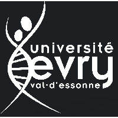
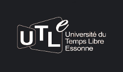
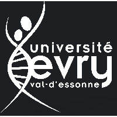
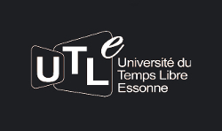

A propos d'Uniview
Uniview implémente l'API WebRTC.
Conception et développement par :
Marvin Alves de Jesus
Yann Mortier
Fabien LeHouezec
Uniview est développé dans le cadre de projets des universités :

© 2016 Uniview
Uniview implémente l'API WebRTC.
Marvin Alves de Jesus
Yann Mortier
Fabien LeHouezec

© 2016 Uniview